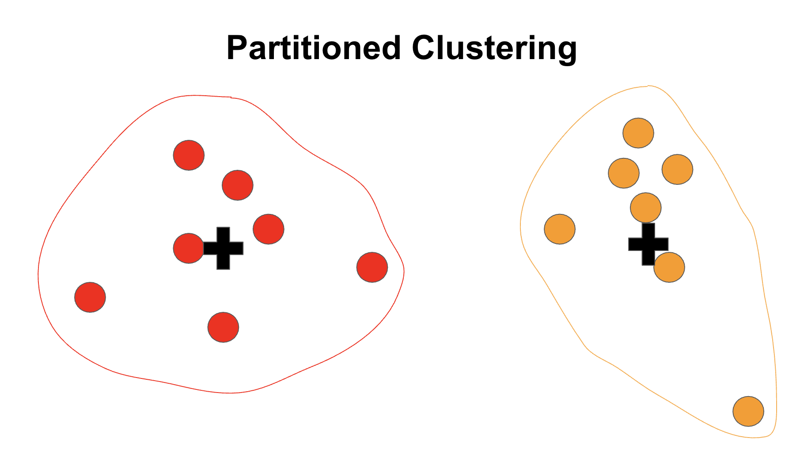
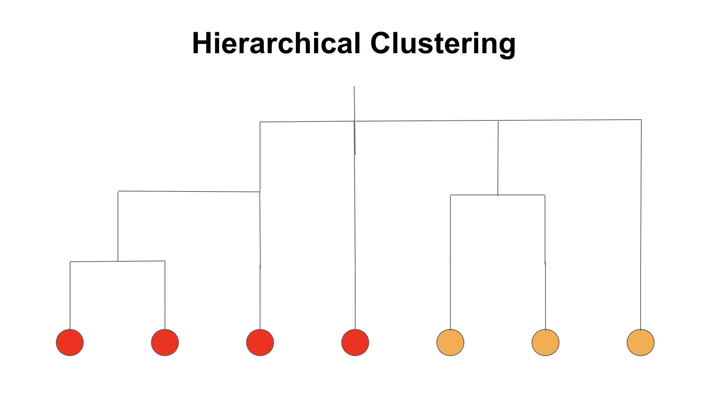

Overview
Clustering refers to a technique of "unsupervised" machine learning. More specifically, this technique determines whether or not the data of interest can be split into groups or categories. This implies that the data does not need to be labeled initially. In order to define groups or categories, a distance measurement is needed to measure where the data points are relative to each other. This is where clustering techniques can become more adaptable to the data! The two main types of clustering that will be used here are partitioned clustering and hierarchical clustering. The conceptual difference between these is that partitioned clustering pre-defines some number of non-overlapping groups and assigns the data points to these based on some similarity measurement, while hierarchical clustering builds clusters from individual points based on some similarity measurement. The similarity measurements can be Euclidean or non-Euclidean distances, and could even be other types of measurements, such as angles. In the context of astrophysical transient detections, clustering techniques may be able to identify different types of transients based on their typical variability without the need to analyze a few detections in detail. To answer this questions, these techniques will be applied to the transient rise/decay times and the transient flux rise/decay (or flux ratio) mentioned in the DataPrep_EDA tab.

